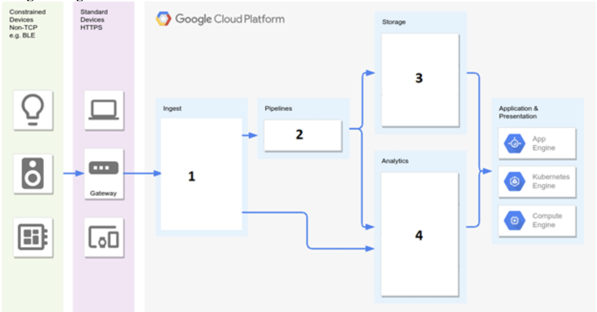
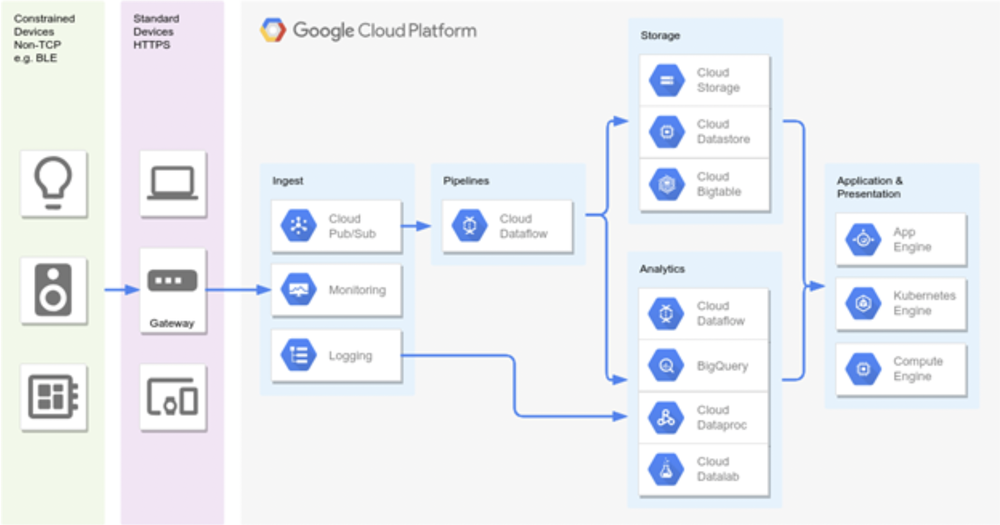

Google Cloud Associate Cloud Engineer Practice Exam - 3:
These are top 50 GCP ACE(Google Cloud Platform Associate Cloud Engineer) certification practice questions/cheatsheet (GCP ACE exam dumps) for professionals who are aspired to be GCP ACE certified. You will find these GCP ACE questions and answers very helpful in your GCP-ACE certification and interviews. Prepare well and All the very best.
All the feedbacks and suggestions are most welocome.
-
You deployed a Python application to GCP App Engine Standard service in the us-central region. Most of your customers are based in Japan and are experiencing slowness due to the latency. You want to transfer the application from us-central region to asia-northeast1 region to minimize latency. What should you do?
a). Create a new GCP project. Create a new App Engine Application in the new GCP project and set its region to asia-northeast-1. Delete the old App Engine application. b). Update the region property to asia-northeast1 on the App Engine application. c). Update the default region property to asia-northeast1 on the App Engine Service. d). Deploy a new app engine application in the same GCP project and set the region to asianortheast1. Delete the old App Engine application. Correct: a Explanation: App Engine is regional, and you cannot change an app's region after you set it. You can deploy additional services in the App Engine, but they will all be targeted to the same region.Reference: https://cloud.google.com/appengine/docs/locations
-
You deployed a java application in a single Google Cloud Compute Engine VM. During peak usage, the application CPU is maxed out and results in stuck threads which ultimately make the system unresponsive, and requires a reboot. Your operations team want to receive an email alert when the CPU utilization is greater than 95% for more than 10 minutes so they can manually change the instance type to another instance that offers more CPU. What should you do?
a). In Cloud Logging, create logs based metric for CPU usage and store it as a custom metric in Cloud Monitoring. Create an Alerting policy based on CPU utilization in Cloud Monitoring and trigger an email notification when the utilization exceeds the threshold. b). Link the GCP project to a Cloud Monitoring workspace. Configure an Alerting policy based on CPU utilization in Cloud Monitoring and trigger an email notification when the utilization exceeds the threshold. c). Write a custom script to monitor CPU usage and send an email notification when the usage exceeds the threshold. d). Link the project to a Cloud Monitoring workspace. Write a custom script that captures CPU utilization every minute and sends to Cloud Monitoring as a custom metric. Add an uptime check based on the CPU utilization Correct: b Explanation: A Workspace is a tool for monitoring resources contained in one or more Google Cloud projects or AWS accounts. In our case, we create a Stackdriver workspace and link our project to this workspace.Reference: https://cloud.google.com/monitoring/workspaces
-
Your company installs and manages several types of IoT devices all over the world. Events range from 50,000 to 500,000 messages a second. You want to identify the best solution for ingesting, transforming, storing and analyzing this data in GCP platform. What GCP services should you use?

a). Cloud Pub/Sub for ingesting, Cloud Dataflow for transforming, Cloud Datastore for storing and BigQuery for analyzing the time-series data. b). Firebase Messages for ingesting, Cloud Pub/Sub for transforming, Cloud Spanner for storing and BigQuery for analyzing the time-series data. c). Cloud Pub/Sub for ingesting, Cloud Dataflow for transforming, Cloud Bigtable for storing and BigQuery for analyzing the time-series data. d). Cloud Pub/Sub for ingesting, Cloud Storage for transforming, BigQuery for storing and Cloud Bigtable for analyzing the time-series data. Coorect: c Explanation: For ingesting time series data, your best bet is Cloud Pub/Sub. For processing the data in pipelines, your best bet is Cloud Dataflow. That leaves us with two remaining options; both have BigQuery for analyzing the data. For storage, it is a choice between Bigtable and Datastore. Bigtable provides out of the box support for time series data. So using Bigtable for Storage is the right answer.
Reference: https://cloud.google.com/bigtable/docs/schema-design-time-series
-
You migrated an internal HR system from an on-premises database to Google Cloud Compute Engine Managed Instance Group (MIG). The networks team at your company has asked you to associate the internal DNS records of the VMs with a custom DNS zone. You want to follow Google recommended practices. What should you do?
a). 1. Provision the VMs with custom hostnames. b). 1. Create a new Cloud DNS zone and set its visibility to private. 2. When provisioning the VMs, associate the DNS records with the new DNS zone. c). 1. Install a new BIND DNS server on Google Compute Engine, using the BIND name server software (BIND9). 2. Configure a Cloud DNS forwarding zone to direct all requests to the Internal BIND DNS server. 3. When provisioning the VMs, associate the DNS records with the Internal BIND DNS server. d). 1. Create a new Cloud DNS zone and a new VPC and associate the DNS zone with the VPC. 2. When provisioning the VMs, associate the DNS records with the new DNS zone. 3. Configure firewall rules to block all external (public) traffic. 4. Finally, configure the DNS zone associated with the default VPC to direct all requests to the new DNS zone. Correct: b Explanation: Our requirements here are Internal and Custom Zone. You should do when you want internal DNS records in a custom zone. Cloud DNS gives you the option of private zones and internal DNS names.Reference: https://cloud.google.com/dns/docs/overview#concepts
-
An application that you are migrating to Google Cloud relies on overnight batch jobs that take between 2 to 3 hours to complete. You want to do this at a minimal cost. Where should you run these batch jobs?
a). Run the batch jobs in a GKE cluster on a node pool with four instances of type f1-micro. b). Run the batch jobs in a GKE cluster on a node pool with a single instance of type e2-small. c). Run the batch jobs in a preemptible compute engine instance of appropriate machine type. d). Run the batch jobs in a non-preemptible shared core compute engine instance that supports short periods of bursting. Correct: c Explanation: Requirements - achieve end goal while minimizing service costs. We minimize the cost by selecting a preemptible instance of the appropriate type. If the preemptible instance is terminated, the next nightly run picks up the unprocessed volume.
-
Your company produces documentary videos for a reputed television channel and stores its videos in Google Cloud Storage for long term archival. Videos older than 90 days are accessed only in exceptional circumstances and videos older than one year are no longer needed. How should you optimise the storage to reduce costs?
a). Configure a lifecycle rule to transition objects older than 90 days to Coldline Storage Class. Configure an other lifecycle rule to delete objects older than 365 days from Coldline Storage Class. b). Use a Cloud Function to rewrite the storage class to Coldline for objects older than 90 days. Use another Cloud Function to delete objects older than 275 days from Coldline Storage Class. c). Use a Cloud Function to rewrite the storage class to Coldline for objects older than 90 days. Use another Cloud Function to delete objects older than 365 days from Coldline Storage Class. d). Configure a lifecycle rule to transition objects older than 90 days to Coldline Storage Class. Configure another lifecycle rule to delete objects older than 275 days from Coldline Storage Class. Correct: a Explanation: Object Lifecycle Management does not rewrite an object when changing its storage class. When an object is transitioned to Nearline Storage, Coldline Storage, or Archive Storage using the SetStorageClass feature, any subsequent early deletion and associated charges are based on the original creation time of the object, regardless of when the storage class changed.Reference: https://cloud.google.com/storage/docs/lifecycle
-
Your company is migrating an application from its on-premises data centre to Google Cloud. One of the applications uses a custom Linux distribution that is not available on Google Cloud. Your solution architect has suggested using VMWare tools to exporting the image and store it in a Cloud Storage bucket. The VM Image is a single compressed 64 GB tar file. You started copying this file using gsutil over a dedicated 1Gbps network, but the transfer is taking a very long time to complete. Your solution architect has suggested using all of the 1Gbps Network to transfer the file quickly. What should you do?
a). Increase the transfer speed by decreasing the TCP window size. b). Restart the transfer from GCP console. c). Upload the file Multi-Regional instead and move the file to Nearline Storage Class. d). Use parallel composite uploads to speed up the transfer. Correct: d Explanation: With cloud storage, Object composition can be used for uploading an object in parallel: you can divide your data into multiple chunks, upload each chunk to a distinct object in parallel, compose your final object, and delete any temporary source objects. This option helps maximize your bandwidth usage and ensures the file is uploaded as fast as possible.Reference: https://cloud.google.com/storage/docs/composite-objects#uploads
-
Your team is responsible for the migration of all legacy on-premises applications to Google Cloud. Your team is a big admirer of serverless and has chosen App Engine Standard as the preferred choice for compute workloads. Your manager asked you to migrate a legacy accounting application built in C++, but you realized App Engine Standard doesn’t support C++. What GCP compute services should you use instead to maintain the serverless aspect? (Choose two answers)
a). Deploy the containerized version of the application in Cloud Run. b). Convert the application into a set of functions and deploy them in Google Cloud Functions. c). Deploy the containerized version of the application in Google Kubernetes Engine (GKE). d). Deploy the containerized version of the application in Cloud Run on GKE. e). Deploy the containerized version of the application in App Engine Flex. Correct: a, d Explanation: App engine standard currently supports Python, Java, Node.js, PHP, Ruby and Go. The question already states App Engine doesn't support C#. We are required to ensure we maintain the serverless aspect of our application. Cloud Run is a fully managed compute platform that automatically scales your stateless containers. Cloud Run is serverless: it abstracts away all infrastructure management, so you can focus on what matters most—building great applications. Run your containers in fully managed Cloud Run or on Anthos, which supports both Google Cloud and on‐premises environments. Cloud Run is built upon an open standard, Knative, enabling the portability of your applications. Cloud Run implements the Knative serving API, an open-source project to run serverless workloads on top of Kubernetes. That means you can deploy Cloud Run services anywhere Kubernetes runs. And suppose you need more control over your services (like access to GPU or more memory). In that case, you can also deploy these serverless containers in your GKE cluster instead of using the fully managed environment. When using the fully managed environment, Cloud Run on GKE is serverless.Reference: https://cloud.google.com/appengine/docs/standard/
Reference: https://cloud.google.com/run
Reference: https://github.com/knative/serving/blob/master/docs/spec/spec.md
Reference: https://cloud.google.com/blog/products/serverless/cloud-run-bringing-serverless-tocontainers
-
You've deployed a microservice that uses sha1 algorithm with a salt value to has usernames. You deployed this to GKE cluster using deployment file:
apiVersion: apps/v1 kind: Deployment metadata: name: sha1_hash_app-deployment spec: selector: matchLabels: app: sha1_hash_app replicas: 3 template: metadata: labels: app: sha1_hash_app spec: containers: - name: hash-me image: gcr.io/hash-repo/sha1_hash_app:2.17 env: - name: SALT_VALUE value: "z0rtkty12$!" ports: - containerPort: 8080You need to make changes to prevent the salt value from being stored in plain text. You want to follow Google-recommended practices. What should you do?
a). Save the salt value in a Kubernetes ConfigMap object. Modify the YAML configuration file to reference the ConfigMap object. b). Bake the salt value into the container image. c). Save the salt value in a Kubernetes Persistent Volume. Modify the YAML configuration file to include a Persistent Volume Claim to mount the volume and reference the password from the file. d). Save the salt value in a Kubernetes secret object. Modify the YAML configuration file to reference the secret object. Correct: d Explanation: In GKE, you can create a secret to hold the password; and then use the secret as an environment variable in the YAML file. You can create a secret using: kubectl create secret generic passwords --from-literal sha1_hash_app_SALT_VALUE=z0rtkty12$! And you can then modify the YAML file to reference this secret as shown below. apiVersion: apps/v1 kind: Deployment metadata: name: sha1_hash_app-deployment spec: selector: matchLabels: app: sha1_hash_app replicas: 3 template: metadata: labels: app: sha1_hash_app spec: containers: - name: hash-me image: gcr.io/hash-repo/sha1_hash_app:2.17 env: - name: SALT_VALUE valueFrom: secretKeyRef: name: passwords key: sha1_hash_app_SALT_VALUE ports: - containerPort: 8080Reference: https://cloud.google.com/kubernetes-engine/docs/concepts/secret
-
You developed an enhancement to a production application deployed in App Engine Standard service. Unit testing and user acceptance testing has succeeded, and you deployed the new version to production. Users have started complaining of slow performance after the recent update, and you need to revert to the previous version immediately. How can you do this?
a). Deploy the previous version as a new App Engine Application and use traffic splitting feature to send all traffic to the new application. b). In the App Engine Console, identify the App Engine application versions and make the previous version the default to route all traffic to it. c). In the App Engine Console, identify the App Engine application and select Revert. d). Execute gcloud app restore to rollback to the previous version. Correct: b Explanation: You can roll back to a previous version in the app engine GCP console. Go back to the list of versions and check the box next to the version that you want to receive all traffic and click the MAKE DEFAULT button located above the list. Traffic immediately switches over to the selected version.
-
You want to migrate a public NodeJS application, which serves requests over HTTPS, from your on-premises data centre to Google Cloud Platform. You plan to host it on a fleet of instances behind Managed Instances Group (MIG) in Google Compute Engine. You need to configure a GCP load balancer to terminate SSL session before passing traffic to the VMs. Which GCP Load balancer should you use?
a). Use HTTP(S) load balancer. b). Use External TCP proxy load balancer. c). Use Internal TCP load balancer. d). Use External SSL proxy load balancer. Correct: a Explanation: This option fits all requirements. It can serve public traffic, can terminate SSL at the load balancer and follows google recommended practices. "The backends of a backend service can be either instance groups or network endpoint groups (NEGs), but not a combination of both." "An external HTTP(S) load balancer distributes traffic from the internet." "The client SSL session terminates at the load balancer." "For HTTP traffic, use HTTP Load Balancing instead."Reference: https://cloud.google.com/load-balancing/docs/https
-
The application development team at your company wants to use the biggest CIDR range possible for a VPC and has asked for your suggestion. Your operations team is averse to using any beta features. What should you suggest?
a). Use 10.0.0.0/8 CIDR range. b). Use 0.0.0.0/0 CIDR range. c). Use 172.16.0.0/12 CIDR range. d). Use 192.168.0.0/16 CIDR range. Correct: a Explanation: The private network range is defined by IETF (Ref: https://tools.ietf.org/html/rfc1918) and adhered to by all cloud providers. The supported internal IP Address ranges are 24-bit block 10.0.0.0/8 (16777216 IP Addresses) 20-bit block 172.16.0.0/12 (1048576 IP Addresses) 16-bit block 192.168.0.0/16 (65536 IP Addresses) 10.0.0.0/8 gives you the most extensive range - 16777216 IP Addresses.
-
Your company is migrating a mission-critical application from the on-premises data centre to Google Cloud Platform. The application requires 12 Compute Engine VMs to handle traffic at peak usage times. Your operations team have asked you to ensure the VMs restart automatically (i.e. without manual intervention) if/when they crash, and the processing capacity of the application does not reduce down during system maintenance. What should you do?
a). Deploy the application on a Managed Instance Group (MIG) that disables the creation retry mode by setting the --nocreation-retries flag. b). Create an instance template with availability policy that turns off the automatic restart behaviour and sets on-host maintenance to terminate instances during maintenance events. Deploy the application on a Managed Instance Group (MIG) based on this template. c). Create an instance template with availability policy that turns on the automatic restart behaviour and sets on-host maintenance to live migrate instances during maintenance events. Deploy the application on a Managed Instance Group (MIG) based on this template. d). Deploy the application on a Managed Instance Group (MIG) with autohealing health check set to healthy (HTTP). Correct: c Explanation: Requirements 12 instances - indicates we need to look for MIG (Managed Instances Group) where we can configure healing/scaling settings. Highly available during system maintenance - indicates we need to look for Live Migration. Automatically restart on crash - indicates we need to look for options that enable automatic restarts. Enabling automatic restart ensures that compute engine instances are automatically restarted when they crash. And Enabling "Migrate VM Instance" enables live migrates, i.e. compute instances are migrated during system maintenance and remain running during the migration. Automatic Restart - If your instance is set to terminate when there is a maintenance event, or if your instance crashes because of an underlying hardware issue, you can set up Compute Engine to automatically restart the instance by setting the automaticRestart field to true. This setting does not apply if the instance is taken offline through a user action, such as calling sudo shutdown, or during a zone outage. Enabling the Migrate VM Instance option migrates your instance away from an infrastructure maintenance event, and your instance remains running during the migration. Your instance might experience a short period of decreased performance, although generally, most instances should not notice any difference. Live migration is ideal for instances that require constant uptime and can tolerate a short period of decreased performance.Reference: https://cloud.google.com/compute/docs/instances/setting-instance-scheduling-options#autorestart
Reference: https://cloud.google.com/compute/docs/instances/setting-instance-scheduling-options#live_migrate
-
A recent reorganization in your company has seen the creation of a new data custodian team – responsible for managing data in all storage locations. Your production GCP project uses buckets in Cloud Storage, and you need to delegate control to the new team to manage objects and buckets in your GCP project. What role should you grant them?
a). Grant the data custodian team Storage Object Admin IAM role. b). Grant the data custodian team Storage Object Creator IAM role. c). Grant the data custodian team Storage Admin IAM role. d). Grant the data custodian team Project Editor IAM role. Coorect: c Explanation: This role grants full control of buckets and objects. When applied to an individual bucket, control applies only to the specified bucket and objects within the bucket.Reference: https://cloud.google.com/iam/docs/understanding-roles#storage-roles
-
You are in the process of migrating a mission-critical application from your on-premises data centre to Google Kubernetes Engine (GKE). Your operations team do not want to take on the overhead for upgrading the GKE cluster and have asked you to ensure the Kubernetes version is always stable and supported. What should you do?
a). When provisioning the GKE cluster, ensure you use the latest stable and supported version. b). Update your GKE cluster to turn on GKE’s node auto-upgrade feature. c). Update your GKE cluster to turn on GKE’s node auto-repair feature. d). When provisioning the GKE cluster, use Container Optimized OS node images. Correct: b Explanation: Node auto-upgrades help you keep the nodes in your cluster up to date with the cluster master version when your master is updated on your behalf. When you create a new cluster or node pool with Google Cloud Console or the gcloud command, node auto-upgrade is enabled by default.Reference: https://cloud.google.com/kubernetes-engine/docs/how-to/node-auto-upgrades
-
Your company stores sensitive user information (PII) in three multi-regional buckets in US, Europe and Asia. All three buckets have data access logging enabled on them. The compliance team has received reports of fraudulent activity and has begun investigating a customer care representative. It believes the specific individual may have accessed some objects they are not authorized to and may have added labels to some files in the buckets to enable favourable discounts for their friends. The compliance team has asked you to provide them with a report of activities for this customer service representative on all three buckets. How can you do this efficiently?
a). Enable a Cloud Trace on the bucket and wait for the user to access objects/set metadata to capture their activities. b). Retrieve this information from the Cloud Storage bucket page in GCP Console. c). Apply the necessary filters in Cloud Logging Console to retrieve this information. d). Retrieve this information from Activity logs in GCP Console. Correct: c Explanation: Our requirements are - sensitive data, verify access, fewest possible steps. Data access logs are already enabled, so we already record all API calls that read the configuration or metadata of resources, as well as user-driven API calls that create, modify, or read user-provided resource data. Data Access audit logs do not record the data-access operations on resources that are publicly shared (available to All Users or All Authenticated Users), or that can be accessed without logging into Google Cloud. Since we are dealing with sensitive data, it is safe to assume that these buckets are not publicly shared and therefore enabling Data access logging logs all data-access operations on resources. These logs are sent to Stackdriver where they can be viewed by applying a suitable filter. Unlike activity logs, retrieving the required information to verify is quicker through Stackdriver as you can apply filters such as: resource.type="gcs_bucket" (resource.labels.bucket_name="gcp-ace-lab-255520" OR resource.labels.bucket_name="gcp-ace-lab-255521" OR resource.labels.bucket_name="gcp-ace-lab-255522") (protoPayload.methodName="storage.objects.get" OR protoPayload.methodName="storage.objects.update") protoPayload.authenticationInfo.principalEmail="XXXXXXXXXXX@gXXXX.com" and query just the gets and updates, for specific buckets for a specific user. This option involves fewer steps and is more efficient. Data access logging is not enabled by default and needs to be enabled explicitly.
-
Your finance department wants you to create a new billing account and link all development and test Google Cloud Projects to the new billing account. What should you do?
a). Ask your security administrator to grant you the Billing Account Administrator role on the existing Billing Account. Link all development and test projects to the existing Billing Account. b). Ask your security administrator to grant you the Billing Account Creator role on the GCP organization and Project Billing Manager role on all the development and test projects. Link all the development and test projects to an existing Billing Account. c). Ask your security administrator to grant you the Billing Account Creator role on the GCP organization and Project Billing Manager role on all the development and test projects. Create a new Billing Account and link all the development and test projects to the new Billing Account. d). Ask your security administrator to grant you the Billing Account Administrator role on the existing Billing Account. Create new development and test projects and link them to the existing Billing Account. Correct: c Explanation: We are required to link an existing google cloud project with a new billing account. The purpose of the Project Billing Manager is to Link/unlink the project to/from a billing account. It is granted at the organization or project level. Project Billing Manager role allows a user to attach the project to the billing account, but does not grant any rights over resources. Project Owners can use this role to allow someone else to manage the billing for the project without granting them resource access. Billing Account Creator - Use this role for initial billing setup or to allow the creation of additional billing accounts.Reference: https://cloud.google.com/billing/docs/how-to/billing-access
-
You are migrating your on-premises workloads to GCP VPC, and you want to use Compute Engine virtual machines. You want to separate the Finance team VMs and the Procurement team VMs into separate subnets. You need all VMs to communicate with each other over their internal IP addresses without adding routes. What should you do?
a). Use Deployment Manager to create two VPCs, each with a subnet in the same region. Ensure the subnets use overlapping IP range. b). Use Deployment Manager to create a new VPC with 2 subnets in the same region. Ensure the subnets use the same IP range. c). Use Deployment Manager to create two VPCs, each with a subnet in a different region. Ensure the subnets use non-overlapping IP range. d). Use Deployment Manager to create a new VPC with 2 subnets in 2 different regions. Ensure the subnets use non-overlapping IP range. Correct: d Explanation: When we create subnets in the same VPC with different CIDR ranges, they can communicate automatically within VPC. "Resources within a VPC network can communicate with one another by using internal (private) IPv4 addresses, subject to applicable network firewall rules."Reference: https://cloud.google.com/vpc/docs/vpc
-
You deployed a Java application on four Google Cloud Compute Engine VMs in two zones behind a network load balancer. During peak usage, the application has stuck threads. This issue ultimately takes down the whole system and requires a reboot of all VMs. Your operations team have recently heard about self-healing mechanisms in Google Cloud and have asked you to identify if it is possible to automatically recreate the VMs if they remain unresponsive for 3 attempts 10 seconds apart. What should you do?
a). Use a global HTTP(s) Load Balancer instead and set the load balancer health check to healthy (HTTP). b). Enable autohealing and set the autohealing health check to healthy (HTTP). c). Use a global HTTP(s) Load Balancer instead and limit Requests Per Second (RPS) to 10. d). Enable autoscaling on the Managed Instance Group (MIG). Correct: b Explanation: To enable auto-healing, you need to group the instances into a managed instance group. Managed instance groups (MIGs) maintain the high availability of your applications by proactively keeping your virtual machine (VM) instances available. An auto-healing policy on the MIG relies on an application-based health check to verify that an application is responding as expected. If the auto-healer determines that an application isn't responding, the managed instance group automatically recreates that instance. It is essential to use separate health checks for load balancing and auto-healing. Health checks for load balancing can and should be more aggressive because these health checks determine whether an instance receives user traffic. You want to catch non-responsive instances quickly, so you can redirect traffic if necessary. In contrast, health checking for auto-healing causes Compute Engine to replace failing instances proactively, so this health check should be more conservative than a load balancing health check.
-
You want to deploy a cost-sensitive application to Google Cloud Compute Engine. You want the application to be up at all times, but because of the cost-sensitive nature of the application, you only want to run the application in a single VM instance. How should you configure the managed instance group?
a). Enable autoscaling on the Managed Instance Group (MIG) and set minimum instances to 1 and maximum instances to 2. b). Enable autoscaling on the Managed Instance Group (MIG) and set minimum instances to 1 and maximum instances to 1. c). Disable autoscaling on the Managed Instance Group (MIG) and set mininum instances to 1 and maximum instances to 2. d). Disable autoscaling on the Managed Instance Group (MIG) and set mininum instances to 1 and maximum instances to 1. Correct: b Explanation: Requirements: 1. Since we need the application running at all times, we need a minimum 1 instance. 2. Only a single instance of the VM should run, we need a maximum 1 instance. We want the application running at all times. If the VM crashes due to any underlying hardware failure, we want another instance to be added to MIG so that application can continue to serve requests. We can achieve this by enabling autoscaling. The only option that satisfies these three is Enable autoscaling on the Managed Instance Group (MIG) and set minimum instances to 1 and maximum instances to 1.Reference: https://cloud.google.com/compute/docs/autoscaler
-
Reference: <a target="_blank" href=></a> Reference: <a target="_blank" href=></a> Reference: <a target="_blank" href=></a> Reference: <a target="_blank" href=></a> Reference: <a target="_blank" href=></a> Reference: <a target="_blank" href=></a> Reference: <a target="_blank" href=></a> Reference: <a target="_blank" href=></a> Reference: <a target="_blank" href=></a> Reference: <a target="_blank" href=></a> Reference: <a target="_blank" href=></a> Reference: <a target="_blank" href=></a> Reference: <a target="_blank" href=></a>
You may also refer to below articles:
- Linux Interview Questions for Freshers
- Linux Interview Questions for Freshers - 2
- Linux Interview Questions for Freshers and Experienced - L1
- Linux Interview Questions for Experienced Linux Admins - L2
- Advanced Linux Interview Questions for Experienced Admins - L3
- Shell-Scripting interview questions
- OS Network Interview Questions
- GCP ACE Practice Questions - 1st
- GCP ACE Practice Questions - 2nd
- AWS Certified SysOps Administrator - Questions and Answers-1st
- AWS Certified SysOps Administrator - Questions and Answers-2nd
- AWS interview questions for experienced professionals - 1st
- AWS interview questions for experienced professionals - 2nd
- Ansible interview questions
- Kubernetes interview questions
- DevOps Interview Questions for Freshers and Experienced
- DevOps Interview Questions for Freshers and Experienced - 2
- GIT Interview Questions for DevOps Roles
- Jenkins Interview Questions for Experienced DevOps Engineer
- Terraform Interview Questions for Experienced DevOps Engineer
- Terraform Interview Questions for Experienced DevOps Engineer - 2
- Terraform Interview Questions for Experienced DevOps Engineer - 3
- JAVA Interview Questions
- JAVA Interview Questions - 2
- Manual Testing Interview Questions for QA Engineers/Testers
- DBMS Interview Questions
- Managerial interview questions